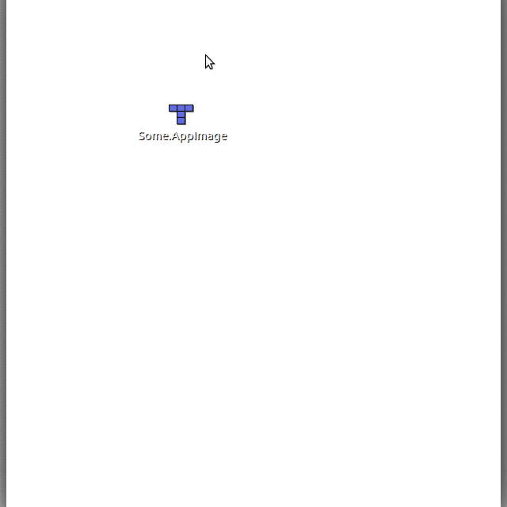

快速入門
本頁提供給初次接觸 AppImage 的使用者，協助快速上手。
如何執行 AppImage
執行 AppImage 非常簡單。您只要下載、設為可執行並執行即可。這可以透過圖形介面或命令列完成。
使用 GUI
開啟檔案管理員並瀏覽到 AppImage 的位置
在 AppImage 上按右鍵並點選「內容」
切換到「權限」分頁，然後
若使用 Nautilus 系列檔案管理員（Files、Nemo、Caja），請勾選「允許將檔案當成程式執行」。若使用 Dolphin，請勾選「可執行」。若使用 PCManFM，請將「執行」下拉選單改為「任何人」。
關閉對話框
雙擊 AppImage 檔案執行
也可參考下方影片：
使用終端機
開啟終端機
切換到包含 AppImage 的目錄，例如使用
cd <my directory>將 AppImage 設為可執行：
chmod +x my.AppImage執行 AppImage：
./my.AppImage
就這樣！AppImage 現在應該會被執行。
本指南的翻譯版本
翻譯版本可在 AppImage 論壇的貼文 中找到。
取得協助
如果您是 AppImage 新手且遇到使用上的問題，請隨時聯絡 AppImage 團隊與他們的社群。他們很樂意提供協助！更多資訊請參閱 聯絡頁。